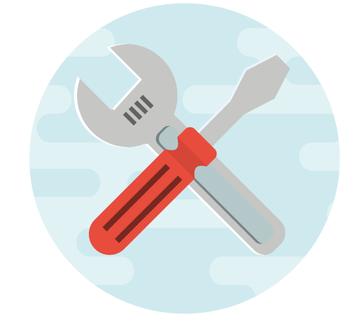

La principal falencia que se ha encontrado es que en el formato de Excel se encuentra mal diligenciada la
pestaña de históricos, donde la dependencia que genera la necesidad debe incluir los datos históricos del
material que se incluye dentro del proceso; estos históricos son extraídos del sistema SAP y se deben
incluir las adquisiciones del material de los últimos tres años.
La principal falencia que se ha encontrado es que en el formato de Excel se encuentra mal diligenciada la
pestaña de históricos, donde la dependencia que genera la necesidad debe incluir los datos históricos del
material que se incluye dentro del proceso; estos históricos son extraídos del sistema SAP y se deben
incluir las adquisiciones del material de los últimos tres años.
Si estos datos no son correctos y no se diligencia la pestaña de forma adecuada, esto produce que las empresas especulen con los precios del material ofertado y como consecuencia de esto se realiza una evaluación económica errónea, provocando que la administración adjudique elementos a las empresas por valores superiores al 25% a adquisiciones de las últimas tres vigencias inmediatamente anteriores a la que se está haciendo el proceso. De ahí la importancia de suministrar la información de manera correcta y de esta forma dar un mejor uso a los recursos del estado.
 De igual manera, sucede con los anexos técnicos, dado que muchas veces son procesos que se ejecutan en todas las vigencias y los estructuradores técnicos tienden a copiar y pegar sin verificar la información están suministrando, lo que ha llevado a errores en la adquisición del material por no ser claros en las especificaciones técnicas que se están solicitando, provocando que llegue material incompleto porque el número de parte incluía una parte del material requerido y le faltan partes, debido a que era otro número de parte el que se debía solicitar para que el material llegara completo.
Inadecuada definición de la necesidad y oportunidad de la contratación.
La selección del personal integrante de los comités estructuradores, supervisor y gerente de proyecto debe de cumplir con lo establecido en la Directiva Permanente No. 12 del 21 de septiembre de 2020, en caso de que no se pueda cumplir con el grado se debe justificar muy bien el porque del nombramiento de una persona con el grado inferior, ya que se observa continuamente que se realizan nombramientos sin cumplir con lo establecido en la directiva en mención y no son justificados, lo que genera que se retrasen los procesos de estructuración.
Se observa que el personal nombrado como estructurador técnico no tiene interés por dar pronta respuesta a los requerimientos jurídicos y económicos dentro de la etapa de estructuración y esto hace que un proceso pueda demorarse más del tiempo normal para la adjudicación.
La Dependencia a través del comité estructurador técnico no realiza la revisión en SAP de los elementos o servicios que requiere, por tal motivo, en el momento de trámite de elaboración de minuta, se presentan retrasos por no coincidir la información de la ficha técnica con lo que está en el sistema SAP.
Se evidencia que el comité estructurador técnico no analiza la garantía técnica que requiere el proceso que está estructurando y se limita a copiar el ejemplo de garantía técnica que fue redactado por ACOFA para dar un apoyo general a los comités estructuradores.
video va acá